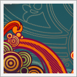

Notepad Chaos: A Free Wordpress Theme by Evan Eckard with a super long post headline
August23

If you have been following Smashing Magazine for a while you know that we love high-quality freebies. Over the last years we've featured a number of designers and developers who released their work for free — among other things we presented high-quality free fonts, free Wordpress themes, free wallpapers and, of course, free icons. You can find many of them in our section Freebies.
Every release helps to make the Web a nicer place which is why we support designers and challenge them to release something for free in order to be featured on Smashing Magazine. And the results are quite often pretty impressive.